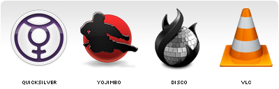
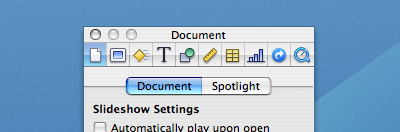
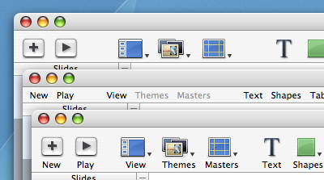

Synergy
Monday, March 26, 2007 17:00noun
The interaction or cooperation of two or more organizations, substances, or other agents to produce a combined effect greater than the sum of their separate effects : the synergy between artist and record company.
In the past I have referred to the relation between the name or text label of an icon and the actual icon. It's a relation that is of great and yet under-appreciated importance.
Application Icons
When it comes to product creation all developers should be aware of the fact that giving a name to a product has a lot of consequences. Names are far to often chosen based on their coolness, based on a hype such as using numbers in a name, or abbreviations. Guy Kawasaki wrote an excellent simple guide, called The Name Game, to find a name for your company or product, I'd suggest everyone to read that.
A name is THE thing people will remember you by. Users will share their experiences to your other potential customers based on you applications name, they will search on google using the name to find reviews, you are going to see your product name plastered all over the web and other places. Choosing a name doesn't have to be hard, but it's a hurdle that when failed taking could have bad consequences in the future.
The name of an application should in my opinion be a summary of what the subject and functionality of your application are. The exercise I would suggest is to summarize the applications ability in just a few words. I do that every time I work on a new icon project to acquire the essence of the application, it's not easy but it's an enormous help to find a visual metaphor.
Above are some good examples of application icons and names that have no or a very thin relation. And when looking at the combinations unbiassed I don't think anybody would be able to tell what the applications did based on their name, icon or the combination.
In a previous article called Obviousness, I wrote the following about the level of difficulty to create an icon.
In most cases the name and the functionality of the application will be the main clues where to start. One thing I can tell in advance is that it will be far easier to create an icon for a small app then for a big bulky feature saturated application. And the reason is simple: if you have to convey "subject and functionality" and the application is able to do a lot with a lot, you will have to make some good decisions. For a one trick pony it will be a lot easier to find the appropriate visual metaphor.Ideally the name and icon of an application should repeat each other to enforce impact.

Although starting of by finding a name and icon that convey the "subject and functionality" of your application, it definitely won't imply success or ease of recognition. If your icon or name is one of many within a generic category you will want to be different on purpose. But creating a brand based on something non-obvious will take you more time and more energy to get across, simply because things such as originality and repeated exposure are then required.
Either way, when building a brand it's important to communicate a single strong message. Disco is an example where we made the conscious decision to be different, but the name and icon convey one message together and repeated exposure was used to make the icon and name meaning well known.
Toolbar Icons
The relation between a toolbar icon and it's text label are of arguably even greater importance for a user. Most applications contain over a dozen of toolbar icons and users tend to interact a lot with them. One thing we as Mac developers should be very happy with is that fact that "almost" everywhere where there is a small icon there also is a text label attached to it. In many of the Windows applications available, there are interfaces littered with tiny icons that have no explanatory text label. I can assure you that from an interaction point of view it's one of the worst things you can throw at your user. The assumption that icons are THE solution for everything is just absurd, they can be of good help though.
When an icon is chosen badly they can either not say anything and cause confusion, or say the wrong thing and cause mistakes. Even if they are well created there is no guarantee that they will convey your intended message perfectly. Especially the smaller icons (14/16/24/32 pixels) have a very limited set of messages they can convey, even more so when used without a text label.
They say "an image can say more then a thousand words" and that's exactly the problem. We tend to interpret an image based on a lot of things, culture and experience are just two of them. And icons, no matter what size they are, will say more then a thousand words when used on their own.
Deciding what toolbar items you are going to put in your interface isn't as easy as most people think. You have to ensure that your application shows "what is needed when it's needed". Since the amount of toolbar items you can show by default is limited, deciding what icon and what 1 or 2 text labels to pick that describe it's potential complicated function is very important.
Icon text labels need to be brief and there for need to be chosen carefully. As seen above a single icon text label often doesn't even come close to explaining what action it will execute. Same goes for a standalone icon. That's not bad, that's just how things are. The magic happens when you know the limitations and make sure the two, the icon and the text label, convey a single message.
Conclusion
An image can say more the a thousand words, and a word can say more then a thousand images. When used together in the right way they can be a powerful filter to convey one targeted message.